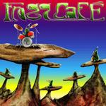

Home Artist links Label link

Frogg Cafe - Frogg Cafe
| Artist: | Frogg Cafe |
| Title: | Frogg Cafe |
| Label: | self released |
| Length(s): | 48 minutes |
| Year(s) of release: | 2001 |
| Month of review: | [06/2002] |
Line up
Nick Lieto - lead vocals, keyboards, trumpet
Bill Ayasse - electric violin, mandolin
Frank Camiola - guitars
Andy Sussman - bass
James Guarnieri - drums
Tracks
| 1) | Deltitnu | 5.48
|
| 2) | Old Souls | 4.07
|
| 3) | Candy Korn Part 1 | 3.48
|
| 4) | Candy Korn Part 2 | 4.13
|
| 5) | While You Were Sleeping | 7.43
|
| 6) | Old Man | 7.38
|
| 7) | Space Dust | 5.29
|
| 8) | Questions Without Answers | 8.55
|
Summary
Frogg Cafe started out Zappa cover band Lumpy Gravy, but shook that image to become what they are now: a progressive rock group influenced by Zappa, amongst others, but its own self. This is their first album, to be followed by, what a surprise, their second this summer.
The music
The opener Delitnu starts pretty folky but as it progresses, the violins slowly derange (as far as that's possible) creating a track more like mid seventies King Crimson.
The band characterize Old Souls as "Donald Fagen meeting Jean-Luc Ponty". Pretty close, but omitting the occasional Frippian guitars, and ignoring the incidental vocal outburst, which brings Lieto's voice closer to Steve Walsh's, really. Good stuff.
Candy Korn (Part 1) continues this potent blend of instrumentalism and vocals to set us up for the trumpet dominated start of Part 2. This moves into neurotic guitarisms and sees the return of the violin.
While You Were Sleeping starts a slow motion duel between guitar and violin. That string ensemble seems to lose out to the piano though. This piece is rather jazzy in a conventional way, not by far as pleasing as the previous ones, which can't be hidden by the googliagagow effects and neurotics towards the end.
Old man starts with the violin followed by the vocal section. The instrumental middle section has some seventies influences, with some marimba (or what sounds like it) and that kind of stuff. Pretty groovy in all.
Space Dust is its own melody in a distinctly King Crimsion way, but a little more original than that. If you catch my drift.
A quietly haunted (don't talk to me of oxymorons (by the way, are those airheads?)) violin with strong vocals and a nifty guitar solo bring this album to stylish closing, in a package labelled Questions Without Answers. Once again showing all their stuff.
Conclusion
The prominent placing of the violin makes comparisons to the likes of Ponty, Dixie Dregs/Jerry Goodman and Zappa rather obvious. Those comparisons, however, belie what is: namely that Frogg Cafe make a strong album of American progressive music, joining complex arrangements with striking melodies and strong vocals. But for While You Were Sleeping, which doesn't really add anything.
You can find the band at www.froggcafe.com
© Roberto Lambooy